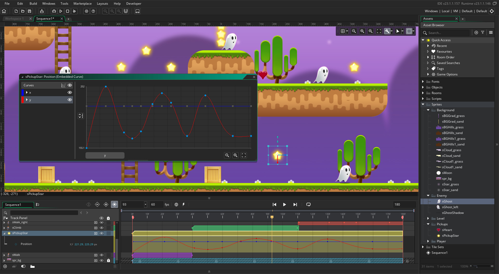
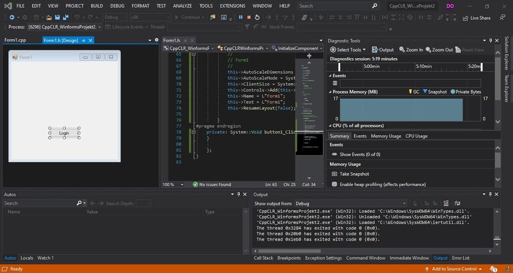
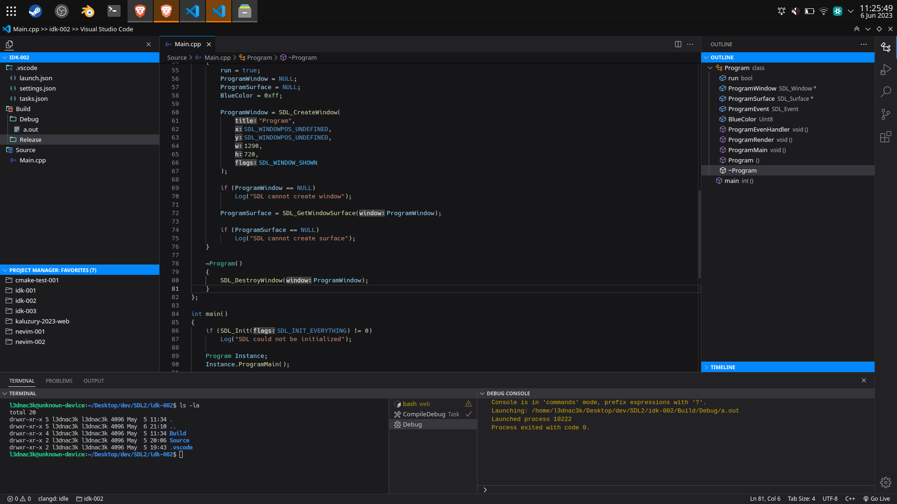
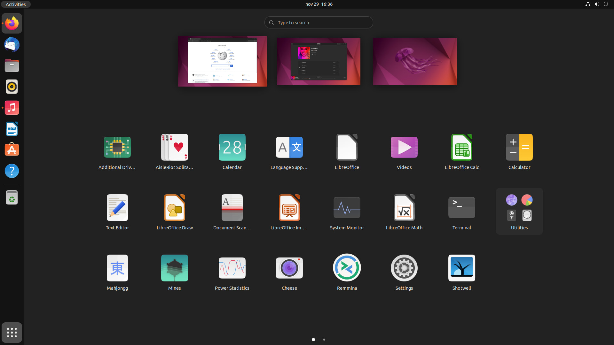

Kdo jsem
O mě
Jsem 16letý student IT se zaměřením na vývoj počítačových her. Už jako malého mě zajímaly videohry a technologie, které je oživují. Společně s mojí touhou prozkoumávat, jak věci fungují na pozadí, mě toto namotivovalo k tomu, abych se začal hlouběji zajímat o to, jak vlastně počítače obecně fungují. Zajména mě oslovily operační systémy. Mezi mé profesní vzory patří například Tom Scott.
Hry
Gamer?
Jednoduše - Ano. Jsem velký hráč už od mého dětství. Poprvé jsem za počítač sedl, už když mi byly tři roky. To bylo, když mě můj starší bratr učíval hrát Trackmania Nations Forever. Postupem času jsem se dostával k více a více hrám od Diabla přes Zaklínače 3 až po Dotu 2, přičemž některé z nich jsou dnes jedněmi z nejznámějších titulů v herní historii. Jednou z takových her je například Overwatch od studia Blizzard Entertainment, který jsem hrával už v betě.
Vývoj
Vzhledem k mé lásce ke hrám jsem se začal zajímat i o vývoj počítačových her. Už jako malý jsem dělal jdnoduché hry pomocí enginu Game Maker Studio (1), což je jednoduchý herní engine, nevyžadující znalost jakéhokoliv programovacího jazyka. Stačilo pouze z jednoduchých bloků skládat logiky hry. Avšak Game Maker Studio mi zanedlouho přestalo stačit, protože nemělo moc pokročilých funkcí. A tak jsem začal hledat jinou cestu, jak vyvíjet hry bez toho, abych uměl programovat. Postupem času mi však došlo, že bez programovaní se moc daleko nedostanu. A tak jsem se začal učit programovat.

Programování
Začátky
S programováním jsem měl poměrně štěstí, protože můj otec je taky "programátor". Je sice pravda že programuje v prostředí SAP, takže mi s mým programováním pomoci nemohl, ale dal mi několik rad, jak se programování nejlépe učit. Ta nejdůležitější rada, kterou jsem ze začátku podcenil - a až teď si uvědomuji její hodnotu - byla, že nejlepší způsob, jak se naučit programovat, je knížka. Jak jsem již zmínil, na tuto radu jsem se tak trochu decentně vykašlal. První programovací jazyk, který jsem zkusil, byl Python. Učil jsem se ho pomocí českého tutoriálu na YouTube, a když se na to podívám zpětně - nenaučil jsem se v podstatě nic. Ano, věděl jsem, co je to proměnná a jak se vypisuje do konzole, ale třeba to, že Python je interpretový jazyk nebo to, jak používat objekty či vytvářet datastruktury, o tom jsem nevěděl nic.
C#
Nějaký čas uplynul, a já se přesunul od pythonu k C#. To už bylo trochu lepší. Začal jsem sledovat zahraniční tutoriály a trochu pochopil základní logiku programování, ale stále jsem nerozuměl, jak například funguje kompilace nebo jak probíhá samotný run-time. Se C# jsem strávil hodně času, ale i tak jsem pořád nebyl moc spokojený s mými schopnostmi v programovaní. Krom toho jsem také postupně začal zjišťovat, že krom Unity enginu se C# v herním vývoji moc nepoužívá (dnes tomu už je jinak, řada enginů nabízí podporu pro C# např. CryEngine, Godot, Unigine). Proto jsem se rozhodl, že se naučím C++.

C / C++
Tentokrát jsem věděl, do čeho jdu, a tak jsem se rozhodl, že se jako základ naučím čisté C. Tentokrát jsem dal na otcovu radu a vzal si knížku. Přiznám se že můj výběr byl poněkud neprofesionální, poněvadž jsem vzal tu nejtenčí, malinkatou knížečku s názvem "Učebnice jazyka C", ale i přes malou velikost mi dala vše, co jsem potřeboval. Nenaučila mne sice, jak psát muj kód tím naprosto nejefektivnějším způsobem pod sluncem, ale to jsem stejně nechtěl. To, co mi dala, je všechno to "know how" kolem programovaní a programovacích jazyků obecně, nejen o C. Naučila mě, jak fungují kompilery, že existují interpretery, a taky jak fungují jazyky využívající obou dvou technik, jako je například Java nebo můj oblíbený C#. Naučila mne, jak funguje assembly language, jak funguje runtime support, statické a dynamické knihovny, příkazy kompileru nebo jak správně používat pointery a pracovat s pamětí. Ta jedna malinká knížkečka z roku 1998 mě pravděpodobně naučila víc, než jsem se sám naučil za těch 7 let, co jsem se zajímal o programování.

Herní Enginy
Během toho, jak jsem se zdokonaloval v programování, jsem zjistil, že čím dál tim víc rozumím tomu, jak vlastně většina technologií pro tvorbu počítačových her funguje. A tak se mi v hlavě zrodila taková myšlenka - co kdybych si zkusil vyrobit vlastní engine. Je pravda, že tu teď sedím o pár let později a z enginu pořád nemám nic, ale moje chápání toho, jak herní enginy fungují na pozadí, se poměrně hodně rozšířilo.
Operační systémy
Linux
Ano, jsem si vědom, že tohle zní jako další otravný linux-guy (což je svým způsobem pravda), ale je to tak. Podlehl jsem možnostem, které mi UN*X systémy nabízely. Ano, je super že Linux je open source a nemá v sobě žádné trackery, ale to není to, co mě opravdu zajímá. Je mi vlastně jedno, když software není open source, pokud je dobrý. Pokud ovšem existuje open source alternativa, která umí vše nebo dokonce více než originální software za cenu větší složitosti, vezmu si open source alternativu. Btw krom Linuxu taky mám poměrně rád FreeBSD a rád bych si někdy zkusil pracovat se Solarisem.
